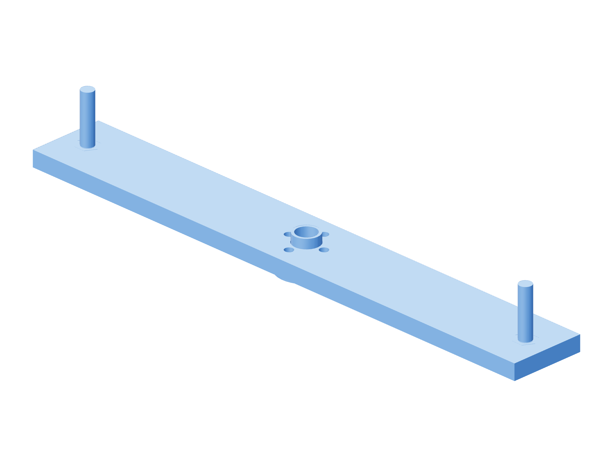

Retention / torque90 / 179
Measure each axis around a full turn
The rigid metal tool has a 100 mm force arm. Measure each brake in both directions around its full turn before loading the gun.
Add1 brake-torque-lever · known masses / force tool · result sheet
Tools / setupScale · 100 mm metal arm · supported mechanism

| Axis | Accepted breakaway | Ideal mass / 100 mm |
|---|---|---|
| Z | 0.20–0.23 N·m | 203.9–234.5 g |
| Pitch V | 0.06–0.08 N·m | 61.2–81.6 g |
| Roll W | 0.02–0.04 N·m | 20.4–40.8 g |
- With load supported, remove the belt/pulley and bolt the balanced lever to its fixed metal flange. Bench-grade with screw horizontal and lever load hole horizontal.
- Weigh the complete hanging mass, including its container/sling. Add mass gradually until motion starts; catch the lever.
- Repeat both directions at eight screw positions spaced 45° apart; use the characterized tangential redirect whenever the load hole is not horizontal. Record breakaway and running drag.
- For installed Z, accept the complete torque interval inside 0.20–0.23 N·m. A 0.205–0.225 indicated guard is usable only if total uncertainty is ≤0.005 N·m; otherwise narrow it. Remove tools and restore the pulley.
Ready when
Every recorded direction/phase lies inside its axis window after accounting for mass, lever and alignment uncertainty; the witness marks remain aligned. An out-of-window value or periodic bind fails the setting. Correct contact alignment/preload and repeat all phases; display resolution is not tool uncertainty.
Torque = mass in kg × 9.80665 × 0.100 m. Account for the tool's own moment and load alignment; use the force-tool procedure if that contribution is not canceled.